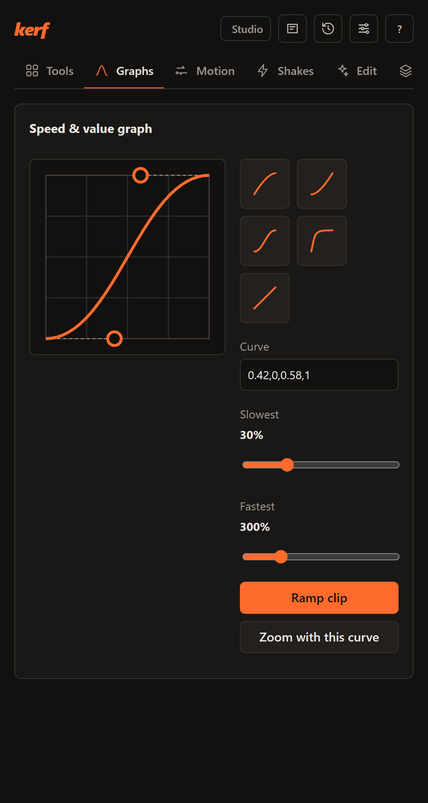
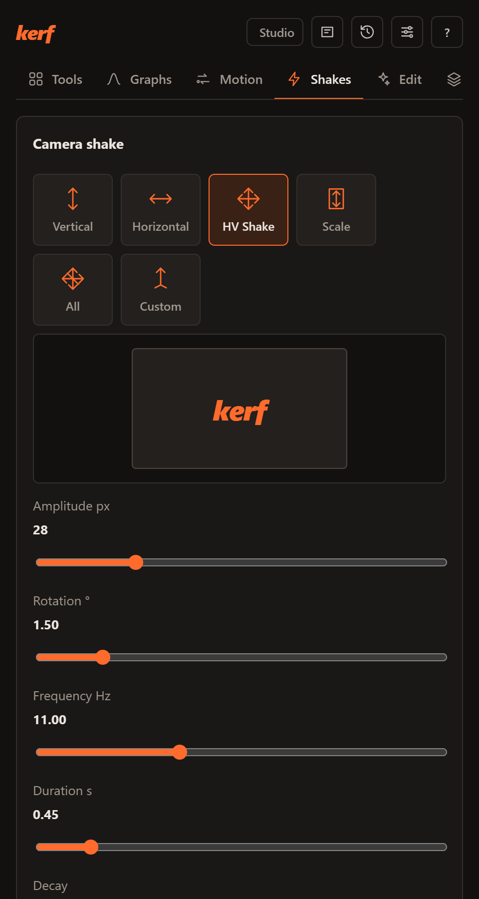
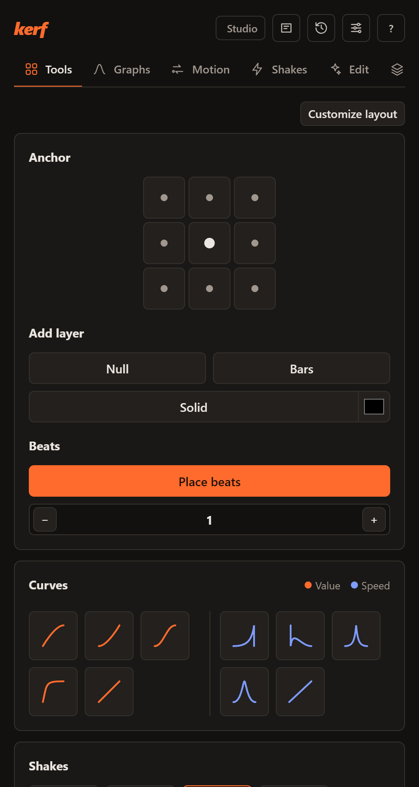

Cut the busywork, not the edit.
Silence cuts, captions, ramps and shakes, inside Premiere, After Effects and Resolve.

In the panel
The same panel in every host, docked next to your timeline.

Camera shake, previewed before it lands
Pick an axis, set amplitude, rotation and frequency, then drop it on the playhead, every cut or every beat.

The hundred-times-a-day tools, one click each
Anchor points, nulls and solids, beat markers, value and speed curves, stabilize, quick mask and frame export.
The engine behind it
It reads your timeline and hands back new sequences, clips or markers. Your edit stays untouched.
- Silences and bad takes
- Loudness or Silero speech detection, J and L cuts, reviewed before cutting.
- Captions and 194 MOGRTs
- Animated word-by-word captions with a safe-zone preview, and a pack of 194 templates whose controls stay editable.
- Transcripts
- Whisper on your computer, large-v3-turbo on an NVIDIA GPU, with a vocabulary that learns your fixes.
- Prompt edits
- Claude, OpenAI, Gemini (your own key) or a local model plans the edit; Kerf runs it.
- Audio
- Voice cleanup, music that ducks under speech, voiceover, translate and dub. Studio cleanup and dubbing use ElevenLabs with your own key.
- Repurpose
- Viral-moment scoring, face-tracked 9:16, chapters, multicam podcasts.
Hosts and systems
One installer, one local engine, no separate app.
| Host | Windows | macOS | Linux | Where to find it |
|---|---|---|---|---|
| Premiere Pro 25.6+ | Yes | Yes | n/a | Window › UXP Plugins › Kerf |
| After Effects 2022+ | Yes | Yes | n/a | Window › Extensions › Kerf |
| DaVinci Resolve 18.6+ (Kerf FX) | Yes | Yes | Yes | Effects › OpenFX › Kerf |
Pricing
Everything here is free. No paid plan is on sale.
Community
Free
Every feature, on every supported host.
- All tools, AI features and the MOGRT library
- Your own AI keys, or a local model
- Automatic updates, which you can switch off
Pro, later
Not on sale
Ideas being considered, none promised and none available:
- Cloud transcription and AI edits, no keys
- Premium template packs
- Signed installers, priority support
Download
One installer adds Kerf to Premiere Pro, After Effects and DaVinci Resolve.
Releases include a SHA256SUMS.txt file with SHA-256 checksums. Older versions are on GitHub.
Questions
Does my footage leave my computer?
Not by default. Cutting, captions, cutouts and renders run locally, and Kerf has no account and no server of its own. Features you switch on yourself, with your own key, do send data to that provider: AI providers receive your prompt and text such as transcripts, stock footage search sends search words, and ElevenLabs voice cleanup and dubbing upload audio. Models download once from GitHub or Hugging Face. The privacy policy lists every connection.
Will it change my edit?
Most features build a new sequence or timeline. Tools such as markers, layers and shakes add items to your project, and you can undo them. Kerf does not alter your original media files.
Why does macOS or Windows warn me on first launch?
The builds aren’t signed with an Apple or Microsoft certificate yet. On macOS, right-click the app and choose Open, or use System Settings, Privacy & Security, Open Anyway. On Windows, choose More info, then Run anyway. If macOS says the app is damaged, run xattr -dr com.apple.quarantine /Applications/Kerf.app in Terminal.
How do updates work?
Kerf checks for new versions while your editor is open, downloads them in the background and installs them after you close your editors, panels included. You can switch this off in the panel’s Settings.
Is a GPU required?
No. With an NVIDIA GPU, transcription uses large-v3-turbo on CUDA; otherwise Kerf picks a fast CPU model automatically.